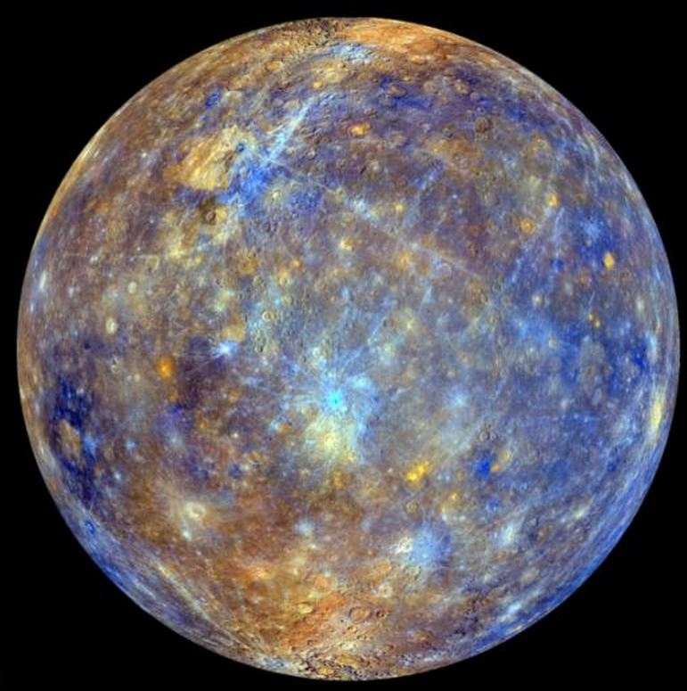

|

|
MERKÜR
Merkür, Güneş Sistemi'ndeki en küçük ve Güneş'e en yakın olan gezegendir. Yörünge süresi yaklaşık 88 Dünya gününe eşittir. Bu yüzden Güneş Sistemi'ndeki diğer gezegenlerden daha hızlıdır. Dünya'dan bakıldığında, kendi yörüngesi etrafında 116 günde hareket ettiği görünür. Bilinen doğal uydusu yoktur. Adını tanrıların habercisi Roma tanrısı Merkür'den alır.
Neredeyse ısıyı koruyacak bir atmosferi olmamasından dolayı, Merkür'ün yüzey sıcaklığı Güneş Sistemi'ndeki diğer tüm gezegenlerden daha fazla günlük olarak değişir. Bazı ekvatoral bölgelerde gece 100 K (-173 °C)'den gündüz 700 K (427 °C)'e kadar değişir. Kutuplar sürekli olarak 180 K (-93 °C)'in altındadır. Merkür'ün ekseni, Güneş Sistemi'ndeki en küçük (yaklaşık derecenin 1⁄30'i) eksen eğikliğine sahiptir ancak Merkür'ün dış merkezliği Güneş Sistemi'ndeki bilinen tüm gezegenlerinkinden büyüktür. Günötede Güneş'e günberide olduğundan 1.5 kat daha uzaktır. Merkür'ün yüzeyi aşırı derecede kraterlidir ve görünüm olarak Ay'a benzer. Bu, milyarlarca yıldır jeolojik olarak etkin olmadığını gösterir.
Merkür, Güneş ile 3:2 rezonansta çekimsel kilitlidir ve Güneş Sistemi'nde eşsiz bir yörüngede döner. Duran yıldızlara göre, Güneş etrafındaki her iki devrine karşılık kendi ekseninde tam olarak üç defa döndüğü görülür. Güneş'ten görüldüğü gibi yörünge hareketi ile dönen bir gözlemci çerçevesi içerisinde, sadece her iki Merkür yılında bir dönüyormuş gibi görünür.
Merkür, Güneş'in etrafında Dünya'nın yörüngesinden içeride döndüğü için, Dünya'nın gökyüzünde sabahları ya da akşamları gözükebilir ancak gecenin yarısında gözükemez. Ayrıca Dünya'ya göre kendi yörüngesi etrafında hareket etmesinin aşamaları tam aralıkla izlenir. Merkür, Dünya'dan bakıldığında parlak bir nesne olarak görülür. Buna rağmen Güneş'e olan yakınlığı nedeniyle Venüs'ten görünmesine göre daha zor görünür.
|